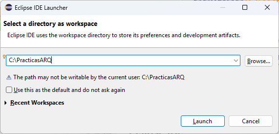
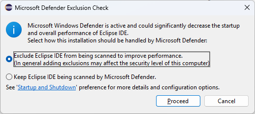
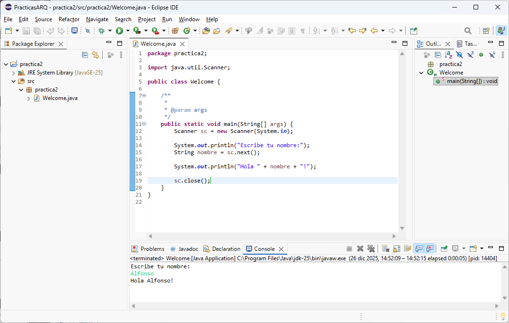

Práctica 2: Un entorno de programación en Java
El entorno de desarrollo Eclipse
Para facilitar la tarea de desarrollo de programas existen entornos que permiten trabajar de una manera más cómoda. Algunos ejemplos son NetBeans, Eclipse o IntelliJ. Nosotros recomendamos el uso de Eclipse, un entorno de desarrollo de libre distribución.
Inicia la herramienta Eclipse haciendo doble clic sobre el ejecutable Eclipse en el escritorio de los laboratorios de prácticas, o bien buscando Eclipse en la barra de tareas. Para instalar esta aplicación en otros ordenadores puede consultarse el Apéndice. Al iniciar Eclipse aparecerá la pantalla de bienvenida que se muestra en la @fig:init_eclipse.

Para poder comenzar a trabajar con el entorno de desarrollo será necesario definir un espacio de trabajo (workspace), tal y como se muestra en la @fig:workspace_eclipse. Este workspace contendrá todos los ficheros creados con Eclipse. Por ejemplo, se puede establecer el directorio C:/PracticasARQ como directorio de trabajo.

En los siguientes subapartados aparecen solo algunas de las características de Eclipse, o recomendaciones acerca de su uso. Si tienes más dudas sobre cómo utilizar Eclipse, deberás consultar la ayuda en línea (opción de menú Help > Help Contents), o bien accediendo a su página web, donde se encuentra también toda la documentación del programa.
Pantalla de bienvenida
La primera vez que se utiliza Eclipse, aparecerá un mensaje preguntándonos si queremos excluir Eclipse del análisis del antivirus de Windows. Como aparece en la @fig:antivirus_eclipse, podemos indicar que se excluya Eclipse de dichos análisis para evitar ralentizar la aplicación.

Una vez seleccionada una opción, nos aparecerá una ventana de bienvenida (@fig:welcome_eclipse) con varias opciones, de las cuales cabe destacar las siguientes:

Si cerramos la pestaña de bienvenida, nos conducirá al entorno de trabajo que se explica en la siguiente sección.
En esta pantalla de bienvenida, en la barra izquierda, se nos muestran algunas opciones, entre las que se incluye Create a Java project. Utilizaremos esta opción cada vez que queramos crear un nuevo proyecto, por ejemplo, para cada práctica de programación de este curso. Para esta práctica, podemos crear un nuevo proyecto al que llamaremos practica2.
Entorno de trabajo
El entorno de trabajo o workbench nos proporciona una interfaz de usuario intuitiva, bien estructurada y sencilla de utilizar, donde están bien definidas las distintas zonas de trabajo. En la Figura 5 se puede observar la interfaz de usuario de Eclipse.
Las diferentes partes en las que está dividida la interfaz son:
- En la zona de la izquierda, se halla un menú (Package Explorer) que agrupa los componentes de cada uno de los proyectos abiertos.
- En la zona central de la pantalla se encuentra un editor, que sirve para ver y modificar los ficheros Java con los que trabajamos.
- En la zona de la derecha, hay un resumen (Outline) que nos indica la estructura del fichero activo en el editor (clases, métodos, variables, etc.).
- En la parte inferior del editor se encuentran algunas utilidades que nos permiten conocer el estado del proyecto, incluyendo errores (Problems) y la salida obtenida en los programas ejecutados (Console).

1.3. Crear un proyecto
Para la realización de cada práctica se recomienda crear un proyecto nuevo. De esta forma se pueden agrupar los ficheros correspondientes a una determinada práctica dentro de ese proyecto para compilar y ejecutar programas individuales que comparten una configuración común.
Los proyectos se crean a través de la opción File > New > Java Project. Para crear el nuevo proyecto hay que dotarlo de un nombre identificativo (ej. practica2). Dicho proyecto corresponderá con un directorio dentro del equipo, y dentro del workspace seleccionado al lanzar Eclipse. Conviene seleccionar la opción Create separate source and output folders. En la Figura 6 se pueden observar todas las propiedades que se pueden definir en la creación del proyecto.El nuevo proyecto que has creado se configurará sobre la carpeta:
Ilustración . Propiedades que podemos configurar al crear un nuevo proyecto.
1.4. Crear una aplicación
Los lenguajes orientados a objetos, como Java, giran en torno al concepto de clase. Todas las variables y métodos de Java deben pertenecer a una clase. Una clase es una colección de datos (variables) y de métodos (funciones) que operan sobre dichos datos. Cada clase pública debe ir en un fichero con extensión .java, cuyo nombre es exactamente igual que el de la clase. Por ejemplo, en un fichero HolaMundo.java, definiremos una clase HolaMundo.
Para añadir nuevas clases al proyecto utilizaremos la opción de menú File > New > Class. Selecciona src como subcarpeta e introduce HolaMundo como nombre del archivo que contendrá el programa (clase) que deberás escribir a continuación. La opción public static void main(String[] args) debe marcarse para que la clase sea ejecutable (ejecutándose por tanto el método main de la clase). La Ilustración 7 ilustra este proceso.Ilustración . Creación de una nueva clase de Java.
Al finalizar la creación, se creará automáticamente un pequeño esqueleto con el código inicial común a cada clase, que deberá completarse para contener el siguiente código:
import java.util.*;
/**
* La clase HolaMundo ejemplifica el uso de Eclipse para programar en Java.
* @author Fernando Bobillo, Alfonso López, Ignacio Huitzil.
*/
public class HolaMundo
{
/**
* El método main contiene el programa principal.
* @param args Puede recibir una lista de parámetros como argumento.
*/
public static void main(String[] args)
{
System.out.print("Escribe tu nombre: ");
String nombre = (new Scanner(System.in)).nextLinea();
System.out.println("Hola " + nom + ", mucho gusto.");
}
}El código anterior contiene algunos errores introducidos voluntariamente para que se produzcan errores de compilación.
El editor de Eclipse es un editor típico del entorno Windows: se puede copiar, cortar, pegar, buscar y sustituir. Tiene un sistema de tabulación inteligente que facilita la tarea de escritura. Se puede conseguir aumentar o disminuir la tabulación de una porción de código seleccionando dicha porción y pulsando tabulador o mayúsculas-tabulador.
1.5. Compilación de aplicaciones
Para compilar el programa deberás utilizar la opción de menú Project > Build Project en el caso de que no esté marcada la compilación automática. En este último caso, será suficiente con guardar el fichero para que se compile.
Dentro de las herramientas que se muestran en la porción inferior, encontramos la subpestaña Problems. En esa subpestaña se nos informará sobre el proceso de compilación indicando los posibles errores (ver Ilustración 8). Puedes seleccionar cada error mediante doble click, y se indicará dentro del código dónde se encuentra el error.Si trabajásemos sin un entorno de desarrollo, sería equivalente a abrir una ventana de órdenes del sistema operativo y teclear:
Ilustración . Compilación con errores.
El primer error se produce porque el nombre correcto del método es nextLine; el segundo porque se ha escrito mal la variable nombre. Corrige ambos errores y recompila con Project > Build project. Ahora no te deberá mostrar ningún error. El fichero compilado se llama HolaMundo.class y se habrá creado en la subcarpeta bin.1.6. Ejecución de aplicaciones
Finalmente, hay que llamar al intérprete de la máquina virtual. En el entorno Eclipse esto se hace utilizando la opción de menú Run > Run as: Java application, o mediante el icono de ejecutar en la barra de herramientas superior .
1.7. Depuración de errores
Para depurar los errores de un proyecto, lo ejecutaremos paso a paso para comprender mejor el funcionamiento real del programa, tal y como se ilustra en la Ilustración 9.
Ilustración . Depuración de un programa.
Para ello, seguimos los siguientes pasos:
Utiliza la opción de menú Run > Toggle line breakpoint para establecer (o eliminar) puntos de parada sobre el código que queremos ejecutar paso a paso. La ejecución paso a paso comenzará en la línea que contenga el punto de ruptura. También se puede utilizar el menú desplegable que aparece al pulsar el botón derecho del ratón sobre el margen izquierdo de la ventana que muestra el código de una clase Java.
Utiliza la opción Run > Debug, o Debug en la barra de herramientas superior, para lanzar la ejecución en modo depuración de errores. Aparecerá una ventana de debugger (depurador) con el estado de todas las variables.Utiliza Run > Step into (F5) y Run > Step over (F6) para ejecutar el código instrucción a instrucción. Step over ejecuta las llamadas a métodos como sentencias simples (sin entrar a ejecutar paso a paso cada instrucción dentro del método).
Para practicar todo lo visto hasta ahora, haz lo siguiente:
Crea una nueva clase llamada Ejercicio (comenzando con una letra mayúscula).
Pega el siguiente código en la clase creada.
Soluciona todos los errores de compilación en el programa anterior.
1.8. Exportar e importar proyectos
Las opciones de exportar e importar proyectos sirven para transferir proyectos de un ordenador a otro. Por ejemplo, podemos exportar un proyecto Eclipse a una carpeta de ficheros ubicada en una memoria USB y, en otro ordenador, importar la carpeta.
Para exportar un proyecto de Eclipse a una carpeta de ficheros, haremos lo siguiente:
Ilustración . Exportar proyectos del workspace.
Marcaremos el proyecto a exportar y todos sus elementos (carpetas en la parte izquierda, ficheros concretos en la parte izquierda). En general, sólo se suele exportar la carpeta src, dado que los ficheros binarios (bin) se generan a partir de la compilación.
En la zona To directory se indicará el nombre de la carpeta que vamos a crear.
Pulsa Finish para finalizar.Si ha ido todo bien, habrás generado una carpeta con la estructura de subcarpetas del proyecto actual. Existen otras maneras de exportar proyectos, pero esta es la más sencilla.
Para importar un proyecto tenemos varias alternativas:
Copiamos la carpeta de ficheros exportada en el workspace del ordenador. Si existe otra carpeta con una versión previa del proyecto (por ejemplo, si estamos practicando la exportación y la importación en el mismo ordenador), deberemos borrar la versión previa para poder importarla correctamente.
Ilustración . Importar proyectos del workspace.
Crear un nuevo proyecto a partir de clases Java existentes utilizando la opción Import > General > File system. De esta manera, podríamos importar únicamente los ficheros .java sin necesidad de considerar el resto del proyecto.
Por ahora recomendamos utilizar la opción General > Existing projects into workspace.1.9. Crear y utilizar bibliotecas .jar
Cuando se quiere distribuir una aplicación desarrollada en Java que incluye un número considerable de clases y paquetes, conviene generar una biblioteca. Las bibliotecas en Java son archivos con extensión .jar que comprimen (al estilo de los ficheros .zip) un conjunto de clases compiladas (.class) organizadas en paquetes. Se puede explorar el contenido de un fichero .jar con programas de compresión de ficheros como WinZip.
Para crear una biblioteca en el entorno Eclipse debemos seleccionar el proyecto que queremos exportar, utilizar la opción de menú File > Export, seleccionar Java > Runnable JAR File y seguir los siguientes pasos, ilustrados en la Ilustración 12:
En Launch configuration se elige la clase principal, es decir, la que tiene el método main que se ejecutará una vez que ejecutemos el fichero .jar.
En Export destination se indica el nombre del fichero que vamos a crear y la ruta donde se va a almacenar dicho fichero.
Pulsa Finish para finalizar. Si ha ido todo bien, se habrá generado un fichero .jar.Ilustración . Construcción de una biblioteca .jar.
Si el programa se llama HolaMundo.jar, podrás ejecutarlo escribiendo en una terminal del sistema operativo lo siguiente:
java –jar HolaMundo.jar
Para abrir una terminal en Windows, hay que utilizar la barra de búsqueda e introducir Símbolo del sistema. Antes de poder ejecutar el .jar con la instrucción anterior, debemos posicionarnos en la carpeta que lo contenga. Para simplificar, guarda el fichero .jar en la carpeta raíz del disco duro, C:, y posteriormente escribe en la ventana de órdenes la siguiente instrucción:
cd /1.10. Añadir bibliotecas a un proyecto
Si queremos utilizar alguna de las clases ya definidas en Java, simplemente es necesario añadir una sentencia en nuestro programa para importar la biblioteca correspondiente. Por ejemplo, para utilizar las clases definidas en el paquete java.util, hemos añadido en nuestro programa la sentencia
import java.util.*;El proceso de incluir bibliotecas diferentes a las incluidas por defecto en Java puede no ser sencillo, ya que hay varias opciones para hacerlo de una manera correcta. Entre las distintas opciones que tenemos para incluir bibliotecas están las siguientes:
Si vamos a utilizar una biblioteca común, es recomendable crear una variable, e incluirla como biblioteca.
Antes de ello, vamos a escribir en nuestro programa la siguiente instrucción:
Practicas.escribeMensaje();
Al compilar, se nos informa de un error: la clase Practicas no ha sido definida todavía. Para solucionarlo, vamos a importar una biblioteca donde se define dicha clase. Debemos hacer click derecho sobre el nombre del proyecto y seleccionar Properties > Java Build Path. Obtendremos una ventana como la de la Ilustración 13.
A continuación, hacemos click sobre Add External JARs y seleccionamos el fichero a importar. Una vez hecho esto, podemos comprobar que es posible ejecutar nuestro programa sin ningún tipo de problemas, pues el código necesario se obtiene en el fichero importado.Ilustración . Añadiendo una biblioteca .jar a un proyecto.
1.11. Generar documentación
Para generar la documentación de las clases y paquetes desarrollados se utiliza la herramienta javadoc, incluida en la JDK. Desde el entorno de Eclipse, se facilita la utilización de esta herramienta a través de la opción de menú Project > Generate Javadoc (Ilustración 14).
En primer lugar, seleccionamos la ubicación del ejecutable javadoc con el botón Configure. Normalmente, Eclipse detecta automáticamente su ubicación y rellena este campo por nosotros, por lo que no necesitamos hacer nada.
A continuación, se debe configurar el directorio de salida de la documentación utilizando la caja de texto Destination y el botón Browse asociado.
Por último, se pulsará el botón Finish para finalizar y generar la documentación. La documentación podrá abrirse con cualquier navegador HTML.
Pruébalo para la clase HolaMundo.Ilustración . Generación de documentación con la herramienta javadoc.